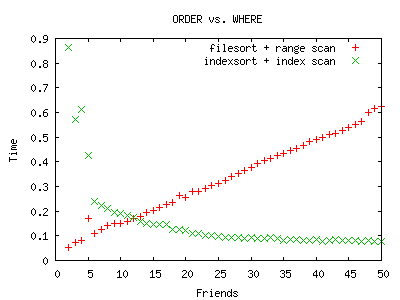
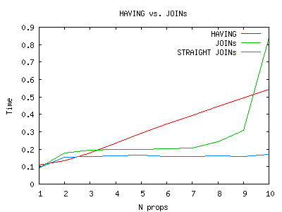
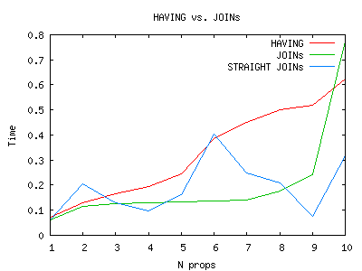
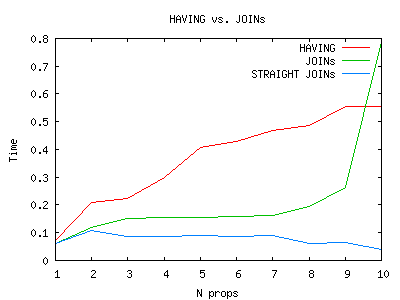

Оптимизация запросов с помощью индексов
Руслан Закиров
Best Practical Solutions, LLC
Индекс
Индекс — объект базы данных, создаваемый с целью повышения производительности выполнения запросов.
- Операции
- Основные: =, >, <
- Производные: >=, <=, LIKE, BETWEEN, IN, ORDER BY...
- Свойства
- Правило левой части (LIKE 'xxx' → LIKE 'xxx%' → LIKE '%xxx')
- Избирательность (unique → boolean)
- Длинна, Глубина, Сбалансированность...
Пример 1 - простые условия
users(id, email_address(unique), name, company, birth_date)
- Каждое поле проиндексировано в отдельности
- email_address = 'ruz@bestpractical.com'
- company = 'Best Practical Solutions'
- name LIKE 'Ruslan%'
- ...но не name LIKE '%, Ruslan'
- birth_date BETWEEN '1980-01-01' AND '1981-01-01'
- ORDER BY birth_date
Выборка из одной таблицы
- Один индекс :( (5.x++)
- Все в одной куче: WHERE, ORDER BY, GROUP BY...
- Индексы нужно оценить и выбрать
- X = 1 AND Y = 2 - четыре вариант индексирования (5.x++)
- X = 1 OR Y = 2 - нельзя использовать индексы совсем (5.x++)
- X IN (1,2) - приходиться сканировать диапазон
Один индекс?
users(id, email_address(unique), name, company, birth_date, disabled(boolean))
EXPLAIN SELECT * FROM u WHERE email = 'user6@g.com'
AND company = 'g' AND name like 'nsg%' AND disabled = 0;
+...+-------+-------------------------+--------+...+------+...+
|...| type | possible_keys | key |...| rows |...|
+...+-------+-------------------------+--------+...+------+...+
|...| const | iemail,iname,icomp,idis | iemail |...| 1 |...|
+...+-------+-------------------------+--------+...+------+...+
- possible_keys - выбор индексов
- keys - индекс, который будет использован
- type - способ получения данных
- rows - приблизительное количество строк
Как становятся избранным?
- Правила
- + Быстрое получение плана
- - Исключения из правил
- Стоимость
- + Взвешенные действия
- - Медленное получение плана
Пример выбора
EXPLAIN SELECT * FROM u WHERE company = 'g' AND name like 'nsg%';
EXPLAIN SELECT * FROM u WHERE company = 'g' AND name like 'n%';
+...+-------+---------------+-------+...+------+
|...| type | possible_keys | key |...| rows |
+...+-------+---------------+-------+...+------+
|...| range | iname,icomp | iname |...| 1 |
+...+-------+---------------+-------+...+------+
|...| ref | iname,icomp | icomp |...| 42 |
+...+-------+---------------+-------+...+------+
Мне квадратный и красный
Проблема
Варианты
- Выбрать индекс по одной из колонок
- Выбрать два набора и найти пересечение (5.x++)
- Объединить колонки в одном индексе
Составные индексы
CREATE INDEX icomp_iname ON users(company, name)
Плюсы
- + Более уникальные наборы
- +/- Подходит для большего количества операций
- - Последовательность: (A,B) != (B,A)
- - Длинна индекса
Составные индексы: (A,B) или (B,A)
CREATE INDEX iname_icomp ON users(name, company)
EXPLAIN SELECT * FROM u WHERE name = 'nsg';
EXPLAIN SELECT * FROM u WHERE name LIKE 'n%';
EXPLAIN SELECT * FROM u WHERE name = 'nsg' and company = 'g';
EXPLAIN SELECT * FROM u WHERE name = 'nsg' and company LIKE 'g%';
+...+-------------+---------+-------------+------+...+
|...| key | key_len | ref | rows |...|
+...+-------------+---------+-------------+------+...+
|...| iname_icomp | 255 | const | 1 |...|
+...+-------------+---------+-------------+------+...+
|...| iname_icomp | 255 | NULL | 27 |...|
+...+-------------+---------+-------------+------+...+
|...| iname_icomp | 510 | const,const | 1 |...|
+...+-------------+---------+-------------+------+...+
|...| iname_icomp | 510 | NULL | 1 |...|
+...+-------------+---------+-------------+------+...+
но...
Составные индексы: (A,B) или (B,A) (...продолжение)
но...
EXPLAIN SELECT * FROM u WHERE name LIKE 'n%' and company = 'g';
+...+-------------+---------+-------------+------+...+
|...| key | key_len | ref | rows |...|
+...+-------------+---------+-------------+------+...+
|...| iname_icomp | 510 | NULL | 27 |...|
+...+-------------+---------+-------------+------+...+
EXPLAIN SELECT * FROM u WHERE company = 'g';
+...+-------------+---------+-------------+------+...+
|...| NULL | NULL | NULL | 1000 |...|
+...+-------------+---------+-------------+------+...+
Выход? Индекс по company, обратный составной или 5.x
Слияние индексов в MySQL 5.x
Как?
- Нашли два набора
- Нашли пересечение наборов
Что меняется?
- + Нет ограничения левой части
- - Дополнительная операция
- - Каждый индекс менее уникальный в отдельности
Слияние(merge) vs. Составные индексы
Слияние
table users(email, name, company, town, ...)
index on (email)
index on (company)
...
Составные
table attributes(object_type, object_id, name, value)
index on (object_type, object_id, name)
Мне квадратный или красный
Проблема
Варианты
- Нельзя выбрать один индекс
- Выбрать два набора и найти объединение (5.x++)
- Объединение? В 4.1 есть UNION!
UNION вместо OR
SELECT id FROM objs WHERE shape = 'square' OR color = 'red';
SELECT id FROM objs WHERE shape = 'square'
UNION SELECT id FROM objs WHERE color = 'red';
SELECT id FROM objs WHERE shape = 'square'
UNION ALL SELECT id FROM objs WHERE color = 'red' AND shape != 'square';
- Тесты 4.x: x 1.8 x 1.1
Слияние(merge) vs. UNION "трюк"
- Одинаковая производительность
- Сложнее запрос → сложнее разбить
- Слияние с объединением полность вытеснит UNION
Опять про уникальность
EXPLAIN SELECT * FROM u WHERE disabled = 0;
+...+------+---------------+------+...+------+...+
|...| type | possible_keys | key |...| rows |...|
+...+------+---------------+------+...+------+...+
|...| ALL | idis | NULL |...| 750 |...|
+...+------+---------------+------+...+------+...+
- Где индекс? A где данные?
- Низкая уникальность
- Быстрее пропустить поиск по индексу
Покрывающие индексы
- Где индекс? A где данные? Быстрее вовсе не обращаться к данным
EXPLAIN SELECT name FROM u WHERE name = 'n' and company = 'g';
+...+---------------+-------------+...+-------------+...+-----------------+
|...| possible_keys | key |...| ref |...| Extra |
+...+---------------+-------------+...+-------------+...+-----------------+
|...| iname_icomp | iname_icomp |...| const,const |...| ... Using index |
+...+---------------+-------------+...+-------------+...+-----------------+
- И даже так:
EXPLAIN SELECT name FROM u WHERE company = 'g';
+...+---------------+-------------+...+-------------+...+-----------------+
|...| possible_keys | key |...| ref |...| Extra |
+...+---------------+-------------+...+-------------+...+-----------------+
|...| NULL | iname_icomp |...| NULL |...| ... Using index |
+...+---------------+-------------+...+-------------+...+-----------------+
Тип операции
Осталось только перечислить
EXPLAIN SELECT ...
+...+-------+...+
|...| type |...|
+...+-------+...+
|...| const |...| - уникальный индекс, одна строка для всего запроса
+...+-------+...+
|...| ref |...| - несколько строк
+...+-------+...+
|...| range |...| - диапазон
+...+-------+...+
|...| index |...| - сканирование индекса
+...+-------+...+
|...| ALL |...| - сканирование таблицы
+...+-------+...+
Оптимизация сортировок
- По индексy можно пройти в обоих направлениях
- Можно комбинировать с операциями ref, index, ALL
- Нельзя комбинировать с range
- Нельзя сортировать одновременно в разных направления
EXPLAIN SELECT... ORDER BY
EXPLAIN SELECT id FROM u WHERE company = 'g' ORDER BY name;
+...+-------------------+-------------+...+-----------------------------+
|...| possible_keys | key |...| Extra |
+...+-------------------+-------------+...+-----------------------------+
|...| icomp | icomp |...| Using where; Using filesort |
+...+-------------------+-------------+...+-----------------------------+
|...| icomp_iname,icomp | icomp_iname |...| Using where |
+...+-------------------+-------------+...+-----------------------------+
Как подсказать оптимизатору?
- USE INDEX(...), FORCE INDEX(...)
- Исправить ошибки оптимизатора
Задача френдленты
TABLE t(id, person, created, ...);
SELECT t.person FROM t WHERE person IN (.........)
ORDER BY created DESC LIMIT 25;
- Конфликт ORDER BY и WHERE
- INDEX(person, created) не работает
- Либо получить все данные, отсортировать и выбрать 25
- Либо выбирать по порядку, делать проверку и остановиться на 25
Задача френдленты (продолжение)
Получить все данные, отсортировать и выбрать 25
- Вариант по умолчанию, цена сортировки не учитывается
- Чем больше набор тем медленнее запрос
Задача френдленты (продолжение)
Выбирать по порядку, делать проверку и остановиться на 25
Задача френдленты (продолжение)

Задача френдленты (окончание)
- Ограничение на количество друзей
- Переключение между запросами (N > F(L, ...))
- Введение доп. условий в запрос (created > -G(N,...))
- Патчинг (спонсирование :) MySQL
Выборки из множества таблиц
- Нашли в первой, заглянули во вторую и по цепочке
- Новый параметр оптимизации: порядок
- Один индекс на объединие
- Количество данных возрастает
Порядок выборки
- const(system) выполяются до
- Зависимые объединения (LEFT, RIGHT)
- "Все" сочетания независимых
- Определяет возможные индексы
Зависимые объединения
- Порядок фиксированный
- В оптимизации участвуют только условия объединения
- Могут вырождаться в NORMAL (5.0++, 4.x with bugs)
- not exist
Перебор сочетаний
- В первой таблице участвуют только константы
- Полученные данные можно использовать в объединениях
- Условия определяют сочетания
Пример
SELECT u.* FROM u, gm WHERE u.id = gm.user_id
AND gm.group_id = 1 AND u.active = 1
- Выбрать активных и проверить принадлежность
CREATE INDEX u1 ON u(active);
CREATE UNIQUE INDEX gm1 ON gm(user_id, group_id);
- Выбрать принадлежащих и проверить активность
CREATE UNIQUE INDEX gm2 ON gm(group_id, user_id);
- Что быстрее?
- А если поискать неактивных в самой большой группе
Составные индексы
- Многие ко многим - gm(user_id, group_id)
- Поиск без обращения к данным
- Индекс в обоих направления
Задача о свойствах
o(id, ...), o2p(UNIQUE(object, property)), p(id, UNIQUE(name))
Найти объекты со свойствами foo, bar и zoo
SELECT FROM o JOIN o2p ON o.id = o2p.object JOIN p ON o2p.property = p.id
WHERE p.name IN (...) GROUP BY o.id HAVING COUNT(1) = N ORDER BY NULL
SELECT o.id FROM o
JOIN o2p AS o2p1 ON o.id = o2p1.object
JOIN p AS p1 ON o2p1.property = p1.id AND p1.name = 'foo'
JOIN o2p AS o2p2 ON o.id = o2p2.object
JOIN p AS p2 ON o2p1.property = p2.id AND p2.name = 'bar'
...
Задача о свойствах (продолжение)

Задача о свойствах (продолжение)
SELECT STRAIGHT_JOIN o.id
FROM p p3, o2p o2p3, p p2, o2p o2p2, p p1, o2p o2p1, o
WHERE o2p1.object = o.id AND o2p1.property = p1.id
AND p1.name = 'wind'
AND o2p2.object = o2p1.object AND o2p2.property = p2.id
AND p2.name = 'mysql'
AND o2p3.object = o2p2.object AND o2p3.property = p3.id
AND p3.name = 'cucumber'
Задача о свойствах (продолжение)
Неравномерное распределение

Задача о свойствах (окончание)
Отсортируем по популярности
SELECT p.name, count(o2p.object) AS count
FROM o2p JOIN p ON p.id = o2p.property GROUP BY p.name

Оптимизация сложных запросов
- DROP ALL INDEXES
- Думайте как mysql
- SELECT COUNT(*) FROM ...
- Не понимаете почему так? STRAIGHT_JOIN, USE INDEX
Вопросы?